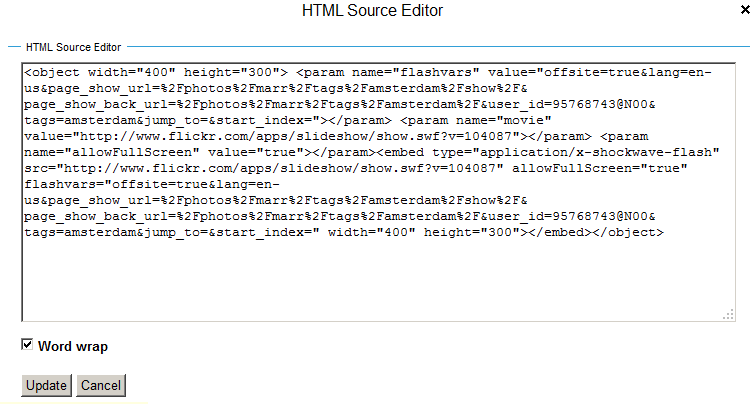
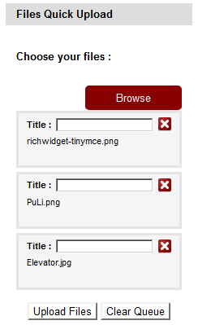
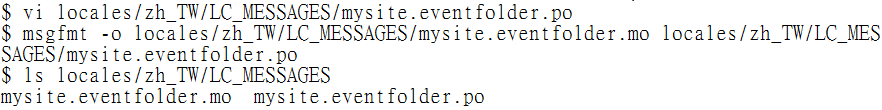

感謝您對「自由軟體鑄造場」的支持與愛護，十多年來「自由軟體鑄造場」受中央研究院支持，並在資訊科學研究所以及資訊科技創新研究中心執行，現已完成階段性的任務。 原網站預計持續維運至 2021年底，網站內容基本上不會再更動。本網站由 Denny Huang 備份封存。
也紀念我們永遠的朋友 李士傑先生（Shih-Chieh Ilya Li）。
也紀念我們永遠的朋友 李士傑先生（Shih-Chieh Ilya Li）。
源碼秘技  用自由軟體 Plone 來架設網站(9)－多媒體結合
用自由軟體 Plone 來架設網站(9)－多媒體結合
用自由軟體 Plone 來架設網站(9)－多媒體結合
建立日期 2011-07-25 17:13 最近更新在 2011-10-12 11:35
依照內容資料的脈絡，Plone 有幾種不同的顯示方法：套用 Archetypes 的內容型別，擁有獨立配套的管理方式；單獨的網頁，可以用 Browser View 來控制；常見的個別表單，可以用 PloneFormGen 來處理。不管是哪種方法，結合 AJAX、Flash 之類的工具，混搭式地呈現內容，已經是主流作法。之前介紹過的 Faceted Navigation 模組，內部使用大量 jQuery 函式庫，我們將延續介紹其他常見的應用方式，例如批次上傳檔案，內嵌方式顯示圖檔、影片、PDF，或是其他線上服務的內容。 另外，訊息中文化的方法，也是許多朋友關心的議題，本文將介紹常見的訊息翻譯步驟和技巧，說明如何利用 i18ndude 和 gettext 協助中文化。
允許 HTML 標籤
為了系統安全及外觀風格一致的因素，Plone 預設會過濾特定的 HTML 標籤，會被過濾的標籤清單，請由 Site Setup → HTML Filtering 檢視設定畫面，如圖1 所示。
▲ 圖1 會被過濾的 HTML 標籤清單
舉例來說，編輯內容時，即使指定使用 embed 或 object 之類的 HTML 標籤，存檔之後仍然消失，原因就是被過濾掉了。該怎樣啟用這些 HTML 標籤呢?
最安全的方式，是使用模組，在檔案系統裡指定這些操作行為。如果你的網站僅開放帳號給特定人員，而且他們都能被信任，則可以考慮直接取消過濾清楚的限制。方法是勾選要取消的項目，點選 Remove selected items 按鈕，最後要再點選最下方的 Save 按鈕，才真正完成生效。
以嵌入 Flickr 照片為例，點選 Share 後，從 Grab the embed HTML 複製程式碼，如圖2 所示。
▲ 圖2 Flickr 內嵌程式碼範例
在 Plone 編輯介面，點選 HTML 按鈕，把複製的 HTML 程式碼，貼到 HTML 編輯器裡，如圖3 所示。

▲ 圖3 複製程式碼到 HTML 編輯器的範例
完成的畫面類似圖4 所示。
▲ 圖4 內嵌 Flickr 照片的範例畫面
同樣的道理，類似 iframe 之類的標籤，並不是 XHTML 的定義項目，想要使用它們的話，必須額外指定，方法是在 Custom tags 設定欄位，先點選 Add Custom tags 按鈕，再填入 iframe 設定值，記得再點選 Save 按鈕完成生效。如圖5 所示。
▲ 圖5 新增 iframe 成為允許的標籤
使用模組展示圖檔
支援圖檔展示的模組很多，collective.plonetruegallery 是佼佼者，以 Plone 4.1 環境為例，安裝方式只要在 eggs 參數設定值，加上 collective.plonetruegallery[all] 就行，如圖6 所示。最後面的 [all] 代表同時支援 Flickr 和 Picasa 服務。
▲ 圖6 在 develop.cfg 新增 PloneTrueGallery 模組
執行 bin/buildout -c develop.cfg 後，會安裝 flickrapi 和 gdata 相依模組，在 Site Setup 的 Add-ons 啟用模組後，就可以在目錄的 Display 下拉選單，看到 galleryview 選項，如圖7 所示。

▲ 圖7 點選 galleryview 可以啟用新的檢視功能
顯示圖檔的管理單位是目錄，啟用 galleryview 檢視功能後，會新增 Gallery Settings 頁籤，如圖8 所示。
▲ 圖8 Plone 目錄圖檔的顯示畫面
在設定主頁面可以看見支援 Plone、Flickr、Picasa 三種類型，還有許多選項和 AJAX 特效可以設定，如圖9 所示。
▲ 圖9 Gallery 設定主頁面
想要選用 Flickr 類型的話，先在 Main 頁籤的 Type 選擇 Flickr，再到 Type Settings 頁籤，填寫 Flickr 的帳號和 Set 名稱，如圖10 所示。
▲ 圖10 設定 Flickr 帳號和 Set 名稱
目錄輪播的圖片換成來自 Flickr 的圖檔，如圖11 所示。
▲ 圖11 輪播 Flickr 圖片的畫面
你還可以用 Gallery Portlet 來顯示圖片，設定範例如圖12 所示。
▲ 圖12 Gallery Portlet 設定畫面
使用模組展示影片
試用過 redturtle.video 模組，它提供影片展示的功能，並支援 Youtube 之類的外部服務。安裝方式是在 eggs 參數設定值，加上 redturtle.video 就行，執行 buildout 會再安裝 collective.flowplayer、hachoir-core、hachoir-metadata、hachoir-parser 等，成功啟用後的模組範例如圖13 所示。在 Plone 4.1 環境，可能會遇到 formlib 問題，修改 from Products.Five.formlib import formbase 成為 from five.formlib import formbase 就行。
▲ 圖13 RedTurtle Video 模組啟用畫面
啟用 RedTurtle Video 後，在內容項目的新增選單，可以看到 Video file 和 Video link 兩個型別，如圖14 所示。
▲ 圖14 Video file 和 link 新型別
以新增 Video file 為例，必填的欄位包括 Title 和 Video file 檔案位置，如圖15 所示。
▲ 圖15 Video file 編輯畫面
Video file 的顯示畫面，包括一個 FlowPlayer 播放區域，並顯示影片長度，如圖16 所示。
▲ 圖16 Video file 顯示畫面
接著，在目錄的 Display 下拉選單，可以看到 flowplayer 選項，點選之後，目錄裡的影片檔案會併列顯示，並直接在 FlowPlayer 播放，如圖17 所示。
▲ 圖17 啟用 flowplayer 顯示方式的目錄畫面
顧名思義，Video link 就是用來播放外部影片服務的型別，圖18 是搭配 Vimeo 的編輯畫面，想要使用 Youtube 服務的話，要再安裝 collective.rtvideo.youtube 模組。
▲ 圖18 Video link 編輯畫面
使用模組批次上傳
想要批次上傳多個檔案，可以借助 Plone Quick Upload 模組，在 eggs 參數設定值加進 collective.quickupload 執行 buildout 就搞定安裝。在 Site Setup 的 Add-on Configuration 會看到 Quick Upload 的設定選項，如圖19 所示。
▲ 圖19 Quick Upload 設定選項
Quick Upload 搭配 Portlet 來顯示批次上傳的操作介面，稱為 Quick Upload Portlet，設定畫面如圖20 所示。
▲ 圖20 Quick Upload Portlet 設定畫面
操作介面支援 JavaScript 和 Flash 兩種方式，預設是使用 JavaScript。選定檔案後，預設可以指定標題，如圖21 所示。

▲ 圖21 Quick Upload 操作介面
中文訊息的支援機制
Plone 內部使用 gettext 工具處理多國語文的支援，翻譯的內容先存在 .po 檔案裡，經過系統編譯成 .mo 檔案，就可以直接被 Plone 讀取。系統翻譯檔由 plone.app.locales 模組管理，正體中文的翻譯檔位於 locales/zh_TW/LC_MESSAGES 目錄裡。
想要設定訊息語系為正體中文，請到 Site Setup 的 Language 指定，要記得勾選 Show country-specific language variants，這樣才會出現 Chinese (Taiwan) 選項，如圖22 所示。
▲ 圖22 設定訊息語系為正體中文
以之前的 mysite.eventfolder 模組為例，在 mysite/eventfolder/__init__.py 檔案裡，看得到它載入 zope.i18nmessageid 的 MessageFactory，透過 message factory 可以把程式碼裡以「特殊符號」標記的訊息字串，萃取成為待翻譯的內容。如圖23 所示。
▲ 圖23 message factory 的宣告範例
所謂特殊符號標記的訊息字串，常見有兩種，一種是以「底線符號」來標記，如圖24 所示。
▲ 圖24 底線符號標記的訊息字串
另一種是以「i18n:」字樣來標記，包括 i18n:domain 和 i18n:translate 等，如圖25 所示。
▲ 圖25 i18n: 字樣標記的訊息字串
利用 i18ndude 模組，可以協助我們萃取和管理訊息字串，在 develop.cfg 新增一個 i18ndude 設定區段，內容如圖26 所示。執行 bin/buildout -c develop.cfg 後，就可以在 bin 目錄裡找到 i18ndude 工具程式。
▲ 圖26 i18ndude 設定區段範例內容
接著，我們要確認 mysite/eventfolder/configure.zcml 檔案裡，完成 ＜i18n:registerTranslations directory="locales" /＞ 的設定，如圖27 所示。
▲ 圖27 configure.zcml 的 i18n 設定範例
同時也要建立 locales 相關的目錄，它們用來存放 .po 檔案，如圖28 所示。
▲ 圖28 建立 locales 相關目錄
訊息字串的翻譯
首先，使用 i18ndude rebuild-pot 建立 .pot 檔案，它是產生 .po 檔案的基礎，再用 i18ndude sync 建立 .po 檔案的內容，如圖29 所示。注意到 i18ndude rebuild-pot 指令最後接的是一個「點符號」，代表現行目錄的位置。
▲ 圖29 使用 i18ndude 建立 .po 檔案的範例
接著，編輯 locales/zh_TW/LC_MESSAGES/mysite.eventfolder.po 的內容，除了記錄人員和時間的資料外，就是要按 msgid 的英文字串，在 msgstr 填入對應的中文字串。如圖30 所示。
▲ 圖30 編輯 .po 內容的範例
編輯完成後，再用 msgfmt 指令把 .po 檔案編譯成 .mo 檔案，指令細節如圖31 所示。

▲ 圖31 使用 msgfmt 編譯 .po 成為 .mo 檔案
重啟系統後，就可以看到上述訊息翻譯的成果，如圖32 所示。
▲ 圖32 mysite.eventfolder 訊息中譯範例
結論
我們示範了幾個展示多媒體的模組，更多應用，留待讀者探索，例如，想要線上顯示 PDF 檔案的話，可以安裝 wc.pageturner 模組。有了圖片和影片的展示模組，結合 Faceted Navigation 之後，就可以做到批次顯示多媒體的搜尋結果。
訊息字串的中文化，需要建立 .po 檔案並進行編譯，如果想把內容也進行中文化，就得借助 Products.LinguaPlone 模組。另外，JavaScript 檔案也有獨立的訊息中文化方式，必須在 browser/configure.zcml 檔案裡指定要額外讀取的 .js 檔案位置。
下次，我們將介紹外部資料庫的連結方式，讓 Plone 的整合功能更上層樓。
您也許有興趣閱讀以下文章:
- 用自由軟體 Plone 來架設網站(10)－連接資料庫 - 2011-08-05
- 用自由軟體 Plone 來架設網站(8)－內容查詢 - 2011-07-12
- 用自由軟體 Plone 來架設網站(7)－版型調整 - 2011-06-28
- 用自由軟體 Plone 來架設網站 (6)－動態網頁 - 2011-06-09
- 用自由軟體 Plone 來架設網站 (5)－元件架構 - 2011-05-20
- 用自由軟體 Plone 來架設網站 (4)－建立專案 - 2011-05-04
- 用自由軟體 Plone 來架設網站 (3)— 內部設定 - 2011-04-25
- 用自由軟體 Plone 來架設網站 (2)— 內容管理 - 2011-04-11
- 用自由軟體 Plone 來架設網站 (1)— 基礎安裝 - 2011-03-21
專欄總覽


自由軟體鑄造場 製作 最佳瀏覽狀態：IE7或Firefox2.0以上 (建議使用Firefox) ‧ 解析度1024*768
E-Mail：contact@openfoundry.org Address：台北市南港區研究院路2段128號 中央研究院資訊科學研究所 . 隱私權條款. 使用條款
E-Mail：contact@openfoundry.org Address：台北市南港區研究院路2段128號 中央研究院資訊科學研究所 . 隱私權條款. 使用條款
評論
hugo
/marr/